2023년에 제작한 게임 프로젝트를 모아둔 페이지입니다.
- 게임 설명 : 거대한 게 괴물로부터 달아나는 싱글 게임으로 보이나 사실 실상은 온라인 멀티 게임으로 괴물을 제작자인 제가 조종 가능하도록 제작했습니다.
- 사용툴 및 기술 : Unity, Photon
- 제작기간 : 3일
- 구현된 기능 : 플레이어 사물 상호작용, 손전등, 사다리 등의 아이템 사용, 게임 오버 연출 등
- 스크린샷


- 게임 설명 : 플레이어끼리 서로 싸워 쓰러뜨리는 게임이다. 콤보, 스킬, 필살기 등을 적절히 활용해 상대에게 승리한다.
- 사용툴 및 기술 : Unity, Photon
- 제작기간 : 1개월
- 맡은 역할 :
1. 프로그래밍 : 로비, 룸 별도로 서버 분리, 플레이어 데이터, 스킬, 이동 등의 네트워크 동기화, 맵 내 스킬 아이템 제작
2. 그래픽 : 캐릭터, 로비, 대기실, 타이틀 화면 등의 그래픽 제작, 독수리 3D 모델 리깅 및 애니메이션 제작, 맵 내 스킬 아이템 제작
3. 기획 : 게임의 핵심 재미 설계 및 맵 구현, 게임 내 스킬 및 전투 시스템 기획
- 주요 클래스 및 코드 요약 문서 : 다운로드
- GitHub 링크 : https://github.com/ZINramen/Fierce_Combat
- 영상 링크 : https://youtu.be/Y1fK2SBoi88?feature=shared
- 스크린샷
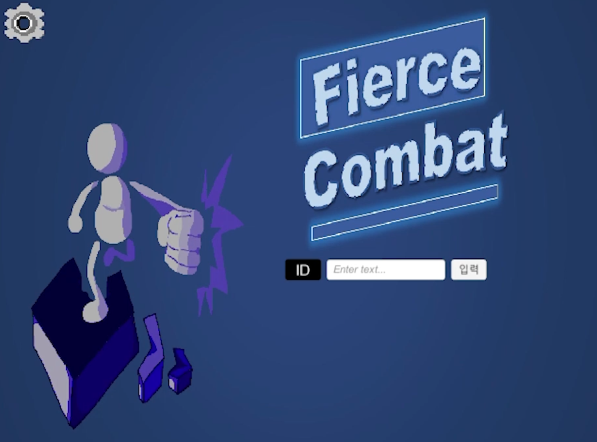 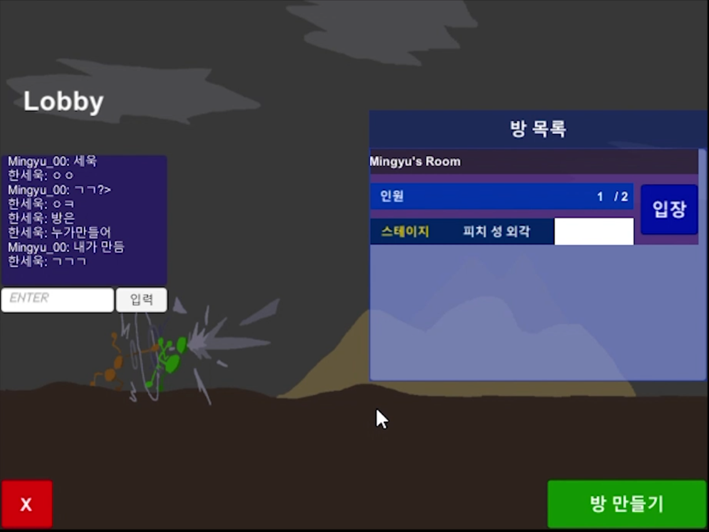 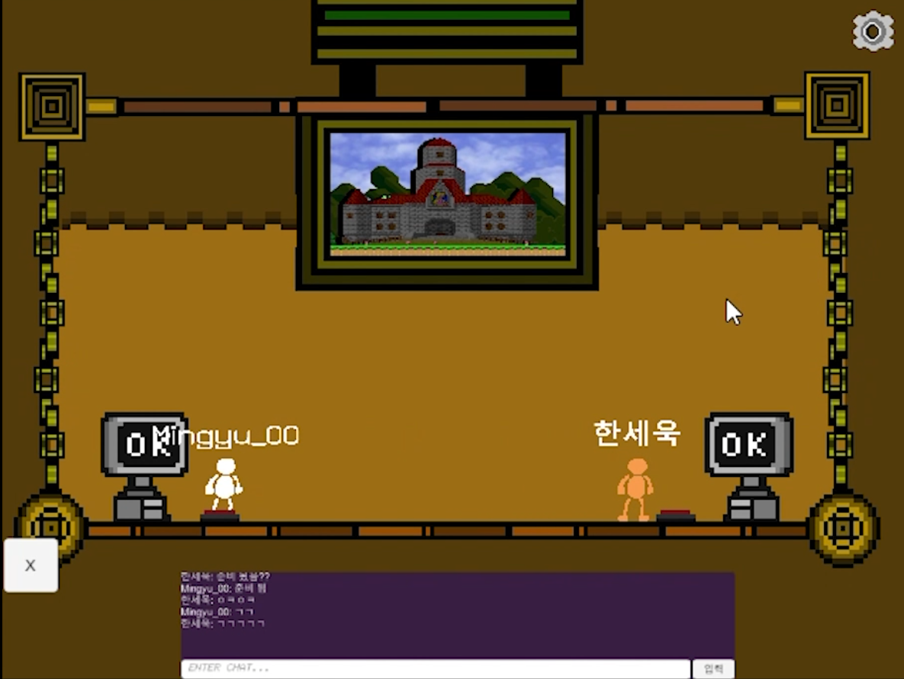 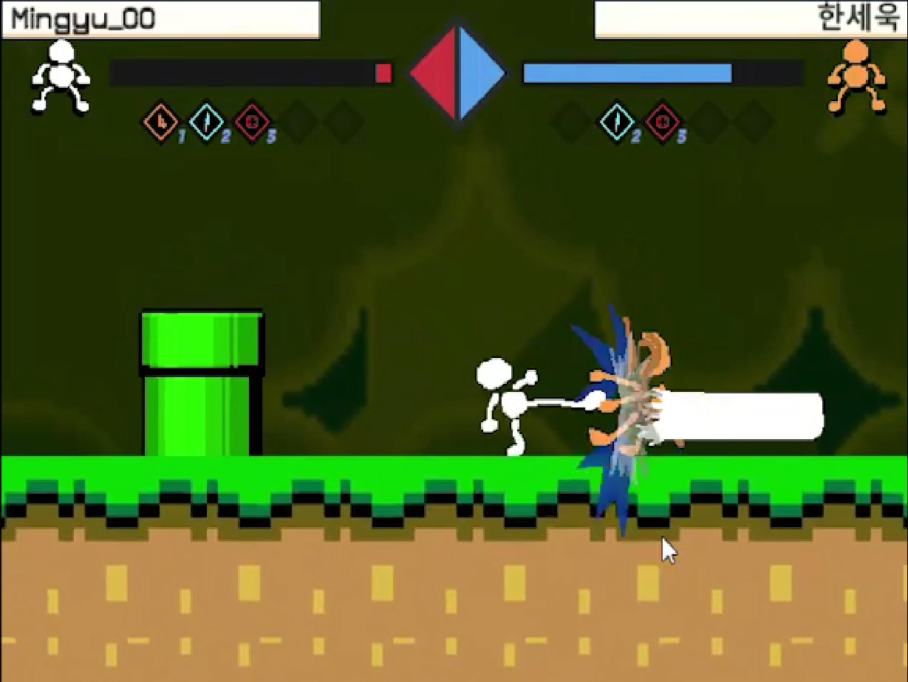 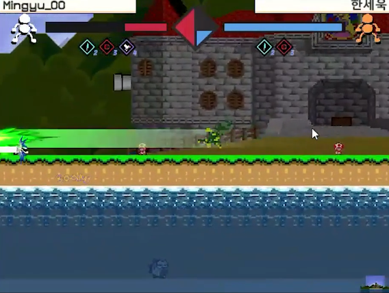- 게임 설명 : Fierce_Combat Online을 인터넷 없이도 게임 가능하도록 재구현.
- 사용툴 및 기술 : Unity
- 제작기간 : 7일
- 구현된 기능 : 플레이어 간의 로컬 멀티플레이, 추가적인 전투 맵과 미니 게임 구현, 싱글 게임, 연습장 등
- 게임 링크 : https://killhorizonmove.itch.io/fierce-combat
- 영상 링크 : https://youtu.be/ClPCVcifeiY?feature=shared
- 스크린샷
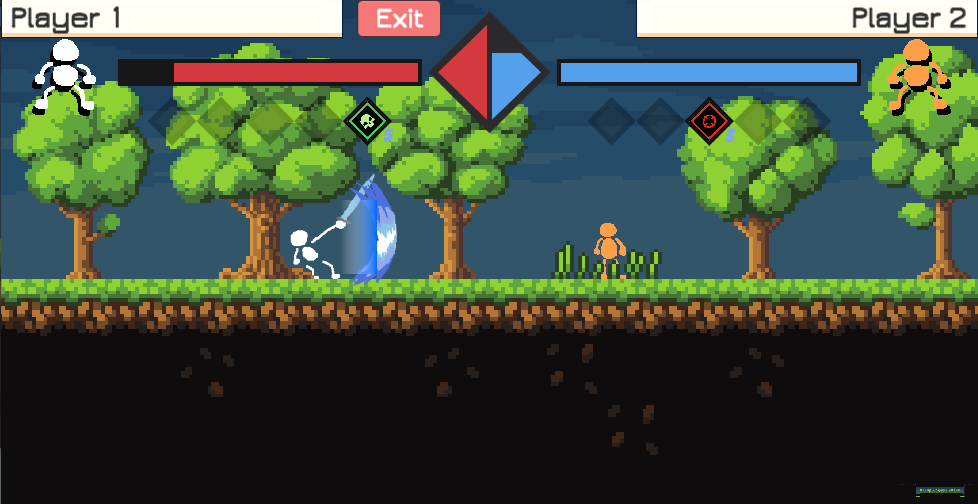 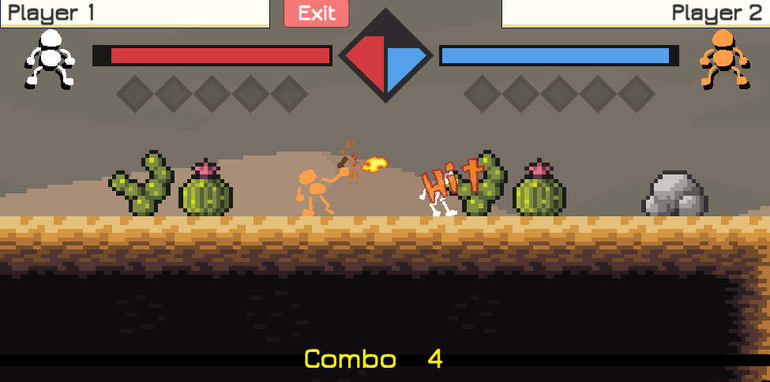 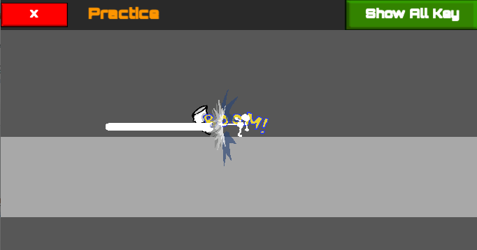 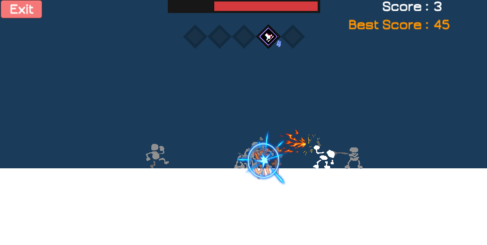 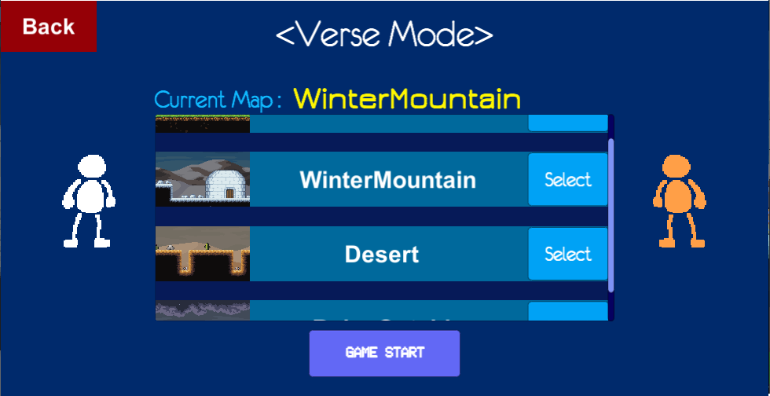- 게임 설명 : TPS 장르의 게임으로 적들을 쓰러뜨리고, 우주선에 탑승해야하는 것이 목적인 게임.
- 사용툴 및 기술 : Unity
- 제작기간 : 1개월
- 맡은 역할 : 프로그래밍(플레이어 조작, 3인칭 카메라, 적 AI, 타이머, 미니맵 등)
- 적 AI 관련 코드 요약 문서 : 다운로드
- 영상 링크 : https://youtu.be/tGzUx4rbYuU?feature=shared
- 스크린샷


- 프로젝트 설명 : 언리얼 엔진 관련 수업의 과제로 제작한 프로젝트이다. 과제의 조건이 블루프린트를 최대한 활용하는 것이 었기 때문에 거의 블루프린트만으로 기술 데모를 만들었다.
- 사용툴 및 기술 : Unreal 5
- 제작기간 : 4일
- 구현된 기능 : 캐릭터 변신, 캐릭터 고유 능력, 사물과의 상호작용, UI 제어 등
- 주요 클래스 및 코드 요약 문서 : 다운로드
- 영상 링크 : https://youtu.be/-mwNFCyBWLQ?feature=shared
- 스크린샷


- 프로젝트 설명 : 언리얼 엔진 관련 수업의 과제로 제작한 프로젝트이다. 과제의 조건이 CPP를 최대한 활용하는 것이 었기 때문에 거의 CPP만으로 기술 데모를 만들었다.
- 사용툴 및 기술 : Unreal 5
- 제작기간 : 4일
- 맡은 역할 : 프로그래밍(NPC AI, 범죄 스택에 따른 경찰 출현(GTA 참조), 물체 옮기기 등 구현)
- 주요 클래스 및 코드 요약 문서 : 다운로드
- 영상 링크 : https://youtu.be/2ClXhfmxpgk
- 스크린샷
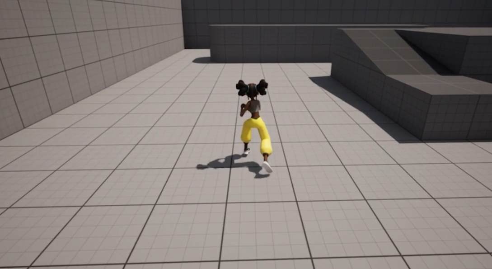 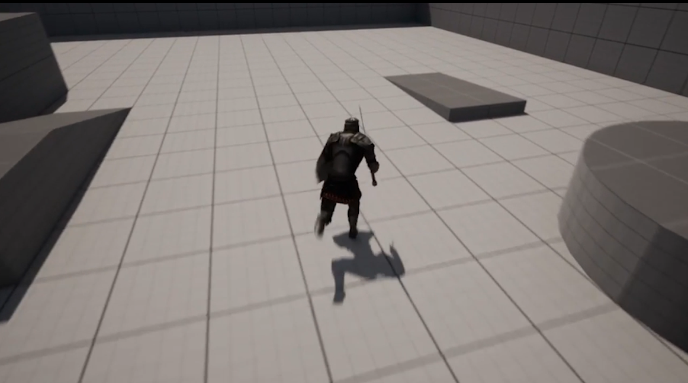 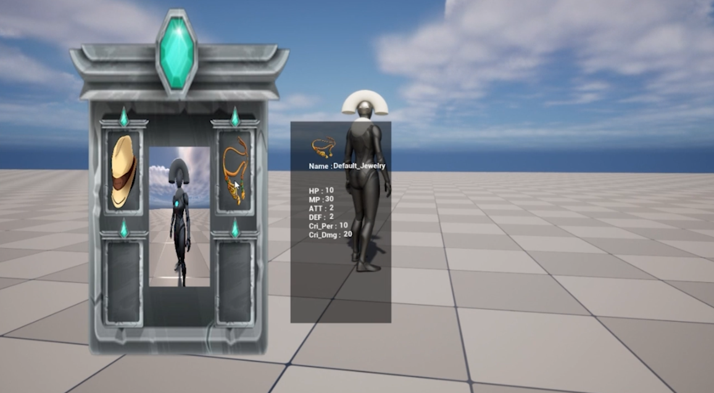 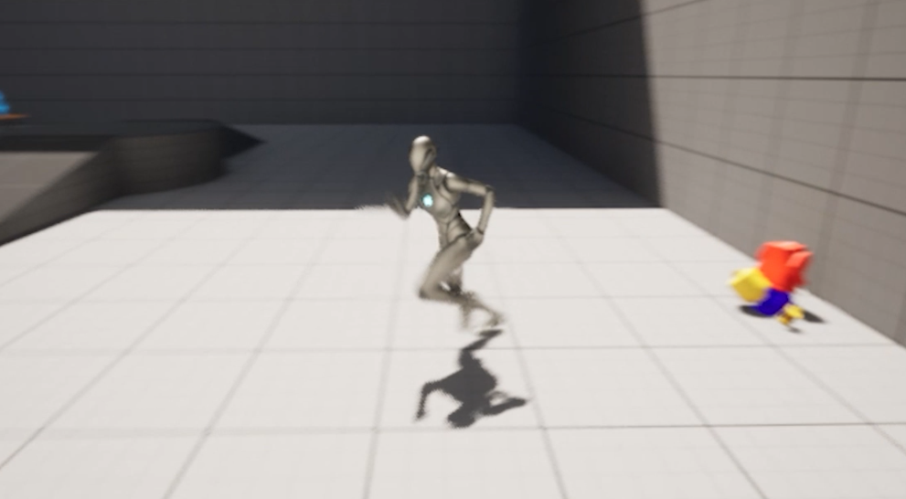 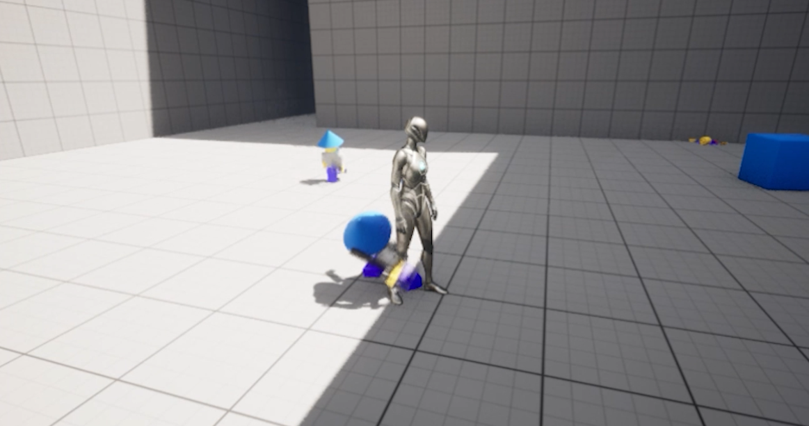 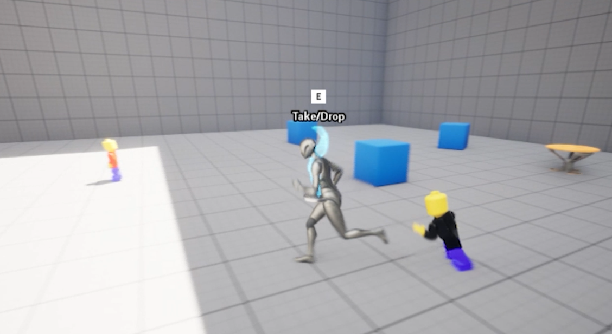 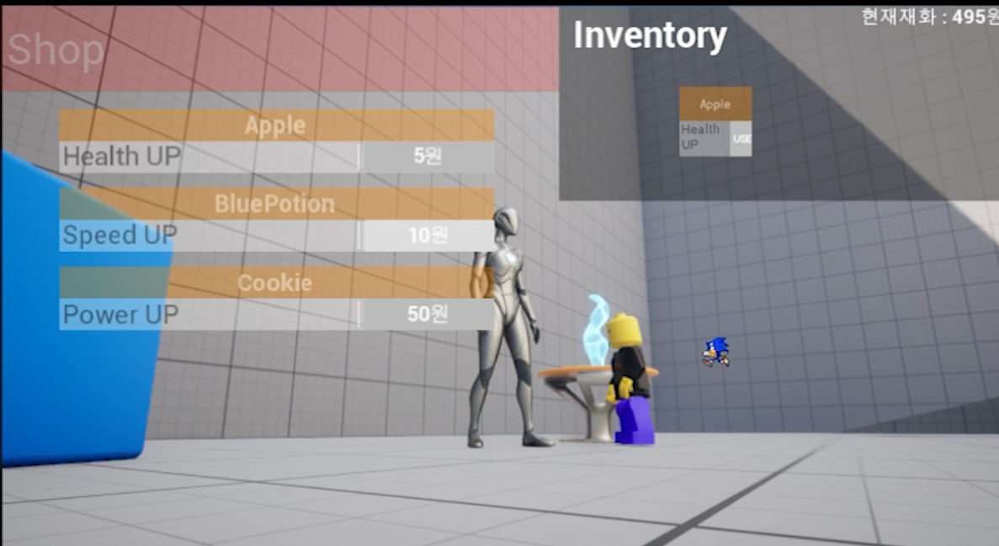